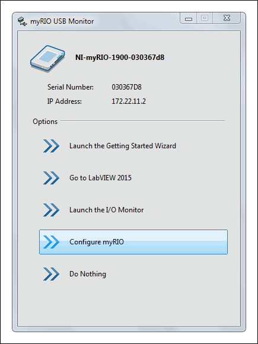
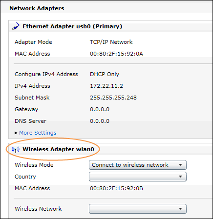
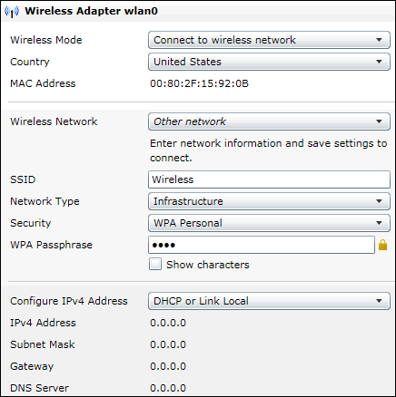

Configuring a Wireless Network on the myRIO
This tutorial teaches you how to connect the myRIO to a wireless network or to create a wireless network on the myRIO. To configure the wireless network on the myRIO, you can use either of the following applications:
- NI Web-based Configuration & Monitoring
- Measurement & Automation Explorer (MAX)
This tutorial uses Web-based Configuration & Monitoring as an example. You also can use MAX by selecting Tools»Measurement & Automation Explorer in LabVIEW.
Note You can only use myRIO-1900 to configure the wireless network.
Connecting to a Wireless Network
Complete the following steps to connect the myRIO to a wireless network, which enables you to control the myRIO through the network:
 |
- Use a USB cable to connect the myRIO to your computer.
- Click the Configure myRIO button in the myRIO USB Monitor to launch Web-based Configuration & Monitoring in your web browser.
Note If you have already connected the myRIO to your computer and do not have the myRIO USB Monitor open, you can open your web browser and enter http://172.22.11.2 in the address bar to launch Web-based Configuration & Monitoring.
|
 |
- Click the Network Configuration button on the left of the web page to display the Network Configuration page. You will configure the settings of the wireless network in the Wireless Adapter wlan0 section.
|
 |
- Select Connect to wireless network from the Wireless Mode pull-down menu.
- Select the country in which you are located from the Country pull-down menu.
Note You must specify a country before you can select an available channel for the wireless network.
- Select the wireless network you want to join or select Other network if you cannot find the wireless network from the Wireless Network pull-down menu.
- Enter security settings for the wireless network that you select.
Note You must select Infrastructure from the Network Type pull-down menu because myRIO does not support Ad Hoc networks.
- Select DHCP or Link Local from the Configure IPv4 Address pull-down menu. This option specifies that the myRIO automatically acquires an IP address.
- Click Save to save the settings and connect the myRIO to the wireless network that you select.
- Verify that the myRIO connects to the wireless network and acquires an IP address. You will use the IP address when you deploy VIs to the myRIO.
|
Congratulations! You have successfully connected the myRIO to the wireless network that you selected. You now can control the myRIO and deploy VIs to the myRIO through this wireless network.